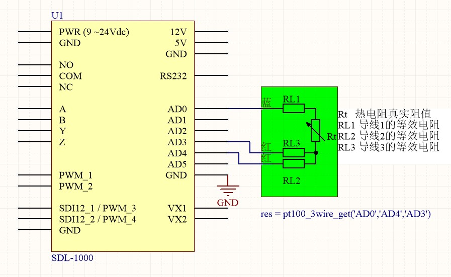
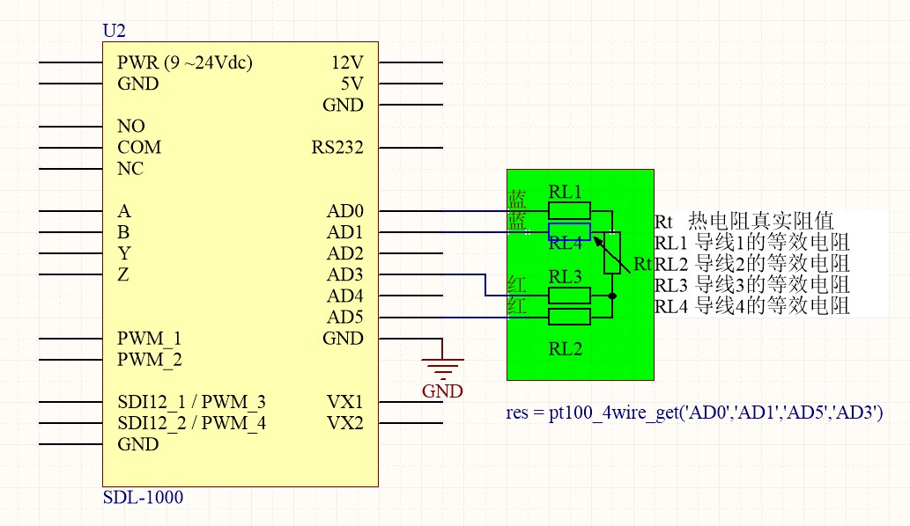

智能数据采集仪使用说明书¶
智能数据采集仪 是一款多用途低功耗的可以二次开发的数据采集采集仪。通过控制脚本，数据采集仪可以测量多数的水文、气象、环境和工业领域的传感器。
数据采集仪可以保存60000条数据采集结果。超过60000条数据后，将自动擦除最先保存的数据。
数据采集仪可以按照预设的时间间隔进行数据采集，也可以按照预设的时间间隔唤醒设备进行数据上传。两种预设间隔独立执行，数据采集仪可以通过多种通信方式将数据上传到指定网站。
智能数据采集仪 根据通信方式不同，包含以下型号：
序号 型号 通信方式 1 SDL-1000W WIFI 2 SDL-1000G GPRS 3 SDL-1000N NBIOT 4 SDL-1000L LORA 智能数据采集仪 采用统一硬件，独立软件的组织方式，可以有效降低硬件采购成本，提高部署简易度，真正实现一款硬件采集任意多种传感器数据并上传。
安全警告¶
在安装、使用、维护以及在三脚架，高墙附近工作过程中都会产生很多危险，特别是某些建筑物带有一些附属设施，比如传感器，交叉悬臂，外壳以及天线等。请勿在恶劣天气下进行任何工作。
未能合适完整的错误组装、安装、操作、使用和维护设备，以及不遵守安全警告，都将增加死亡，严重伤害，财产损失与设备损坏的风险。在进行现场安装工作之前，请先获取必需的批准和许可。尽量使用制造商推荐的零件，材料和工具。
务必采取一切合理的预防措施以避免这些危险。在执行任何工作之前，仔细阅读安全规程和检查所需的保护设施，遵守所有电气规范。电气设备和相关的接地装置应该是由有执照的合格的电工安装，以免发生意外事故。
对于室外或潮湿环境推荐配备防水箱一起使用。
使用须知¶
在使用的过程中，需注意以下几点：
- 供电请勿超过电压值。正常供电电压范围为：9V~24V
- 请远离水，潮湿等地方
- 请远离静电
设备概览¶
接线端子布局¶


安装设备¶
智能数据采集仪 以及相关的外设必须保证在干燥环境下使用。带电的潮湿环境将会严重损害设备。一般情况下，把设备放在防水箱里，并放置一些干燥剂，就可以有效防潮。干燥剂需要每隔一段时间重新更换。
系统供电¶
系统供电电压范围：9～24V Dc。 系统可以通过2种方式供电：
- 正面PWR端子。
- 侧面DC5.0接口。
设备接地¶
有效接地能够很好的提高设备安全性，释放瞬间的电击。在野外，最简易的接地方式是使用14AWG的导线连接埋入大地的5脚铜质护套。
测量功能¶
数字总线测量¶
RS422/RS485自定义协议¶
智能数据采集仪 提供满足RS422协议的总线采集功能。如果使用RS485协议，可以先连接采集仪的A-Y， B-Z，再连接传感器。
串行波特率最大为 921600。
脚本函数为：
rs422_send相关端子为：
A - B - Y - Z
MODBUS协议¶
智能数据采集仪 提供的MODBUS协议采集是基于 RS422总线和端子。当前采集仪仅支持 MODBUS RTU协议。
串行波特率最大为 921600。
脚本函数为：
modbus_send相关端子为：
A - B - Y - Z
RS232自定义协议¶
智能数据采集仪 提供满足RS232协议的总线采集功能。仅支持TX RX GND3个引脚。
串行波特率最大为 921600
脚本函数为：
rs232_send相关端子为：
DB9接口
SDI12协议¶
智能数据采集仪 提供2个通道，满足SDI12 1.3协议的总线采集功能。
脚本函数为：
sdi12_1_send，sdi12_2_send相关端子为：
SDI12_1，SDI12_2
模拟信号测量¶
电压测量¶
智能数据采集仪 提供6个通道的 单端 电压测量以及 3对 差分电压测量。 24bit分辨率， 量程 0~4.096V。
脚本函数为：
vol_sigle_get,vol_diff_get相关端子为：
AD0,AD1,AD2,AD3,AD4,AD5参考连接电路：
单端电压测量
输出电压小于4.096V
输出电压 0 ~ 10V
差分电压测量
电流测量¶
智能数据采集仪 提供2个通道的电流测量。 24bit分辨率， 量程 4 ~ 20mA。
脚本函数为：
current_get相关端子为：
AD2,AD3参考连接电路：
警告
仅 AD2 , AD3 具有电流测量功能。
热电阻测量¶
智能数据采集仪 可以进行一通道 PT100热电阻测量。支持三线式 和 四线式 PT100传感器。
脚本函数为：
pt100_3wire_get,pt100_4wire_get相关端子为：
AD0,AD1,AD2,AD3,AD4,AD5参考连接电路：
三线式PT100传感器
四线式PT100传感器

注解
请注意连接端子 与 脚本函数参数的对应关系
数字电平测量¶
引脚“SDI12_1”，“SDI12_2”，“PWM_1”，“PWM_2”，可以复用为数字输入输出。电压范围为0～5V。注意一旦这些引脚正在进行其他功能，则“数字输入输出”功能无效。
数字输入输出功能可以使用如下函数：
output_set(io_channel,io_value)输出高低电平input_get(io_channel)获取高低电平相关端子为：
SDI12_1,SDI12_2,PWM_1,PWM_2
警告
数字输出时，驱动能力较弱。电流消耗较大的场合，请扩展驱动电路。
脉冲计数与频率¶
智能数据采集仪 可以进行 4个通道的低频计数功能。低频计数时，不需要指定时间，一旦
pwm_start计数开始，每当引脚端子监测到上升沿，对应 计数值增一。可以在任意on_start执行时，通过pwm_get获取计数。低频计数不受设备休眠影响。可以通过pwm_stop停止计数，也可以通过pwm_set重置计数。计数范围：0 ~ 2^32 。低频计数相关端子：
PWM_1,PWM_2,SDI12_1脚本中使用PWM_3,SDI12_2脚本中使用PWM_4智能数据采集仪 可以进行 2个通道的高频计数功能。高频计数需要指定一个时间段，统计一个时间段内的总的脉冲个数。通常用于频率测量。由于测量时隙内，回调函数返回之前，设备无法休眠，将导致功耗增大，所以请合理选择测量时间。
高频计数函数：
pulse1_count_start,pulse2_count_start高频计数相关端子:
PWM_1,PWM_2
注解
低频测量时，对于机械式脉冲传感器，比如翻斗式雨量筒， 为避免机械接触时产生的抖动导致的误计数， 可以在测量引脚端子与GND之间并联 0.1uF ~ 1uF的电容。
注解
对于 PWM_1 PWM_2 端子，内部已经通过4.7K电阻上拉至5V，所以可以直接连接机械式脉冲传感器 和 NPN型 开漏输出传感器，不需要额外电路。
时间较准与获取¶
智能数据采集仪 内部集成了高精度RTC芯片，每年误差不超过3s。每24小时自动从网侧同步一次时间。 可以使用如下函数获取不同格式的系统时间：
datetime()获取当前时间字符串“YYYY-MM-DD HH:mm:SS”timestamp()获取UNIX timestampbcdtime()获取BCD格式的时间字符数组，主要用于数据上传通过上位机也可以设置采集仪系统时间。
辅助功能¶
电源电压¶
智能数据采集仪 支持电源电压测量，用于故障检测。 可以使用sys_power_vol()函数进行控制。 返回值为当前电源电压的10倍。
继电器控制¶
智能数据采集仪 提供一路继电器控制，用于自动化控制。比如，传感器数值超限时，自动断开电源，或启动伺服等。 可以使用
relay(onoff)函数进行控制。 相关端子为：
- NC 继电器常闭引脚
- COM 继电器通用引脚
- NO 继电器常开引脚
数据存储器¶
智能数据采集仪 内部可以提供多达60000条的数据存储，直到确保采集数据被上传到服务器。超过60000条数据后，将自动擦除最先采集的数据。
智能数据采集仪 同时支持SD卡 数据导出功能。导出格式为 csv格式。
缓存存储器¶
为了实现依赖历史数据的特定算法， 智能数据采集仪 提供 512个number型数据缓存区，以及512字节的table变量缓存区。缓存区数值可以在每次执行脚本时 设置和读取。 缓冲区数据掉电丢失。
闪电保护¶
雷击可能会损坏或破坏 智能数据采集仪 和相关的传感器和电源
最常见破坏性的静电放电主要是雷击。 首先是雷电直接击中仪器设备，其次是感应电力线或者连接到电线的其他电压仪器和设备。虽然市场上精密的闪电保护系统是十分可靠的，但是价格确十分昂贵。本公司多年来已经研制出一种简单而便宜的设计，可以保护绝大多数系统。该系统采用避雷针，金属桅杆，重型号接地线和接地棒，以引导和疏离损坏的 智能数据采集仪 电流。但这个方法也并非是无懈可击的。
下图是一个典型的图系统的应用 。

数据上传¶
智能数据采集仪 支持TCP,UDP,LORA,NBIOT 几种协议上传。
目前上传协议支持：
- 天星智联 UDP
- 庆云 TCP
- Onenet TCP
定制协议或详细协议信息，请咨询客服。